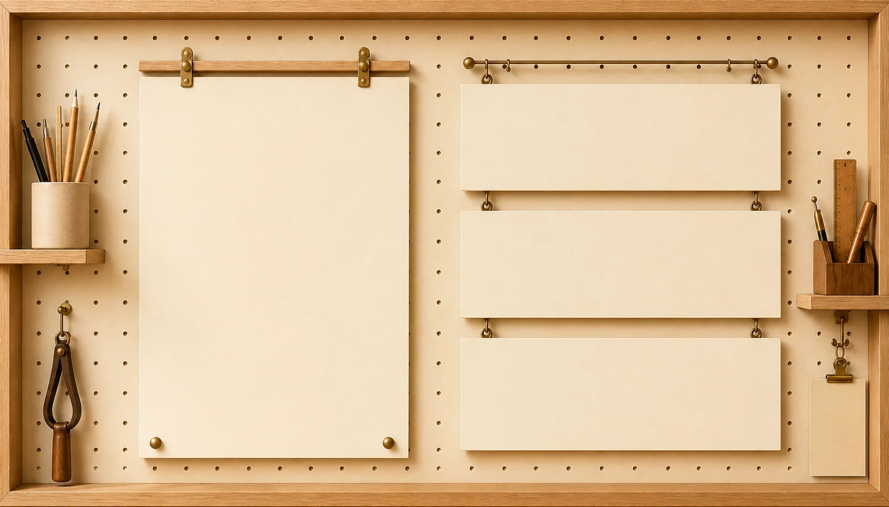
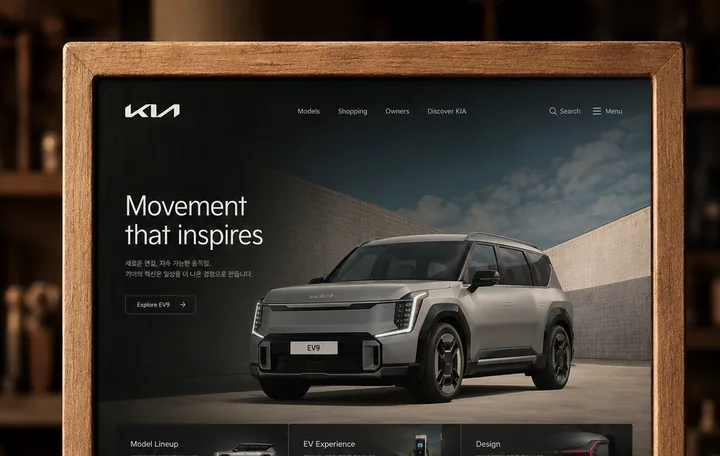
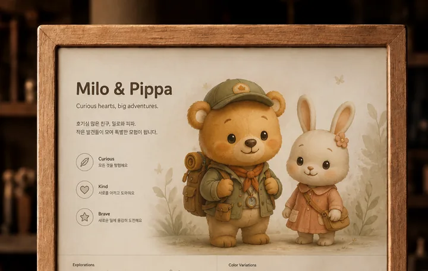

UI/UX · Web · App · Visual · 3D
PORTFOLIO
정보 구조, 화면 흐름, 시각 시스템을 연결해
명확한 디지털 경험을 만듭니다.
Designer Profile
사용자 흐름을 설계하고,
브랜드에 맞는 화면 경험으로 완성합니다.
목적을 정의하고, 정보 구조와 화면 흐름을 정리한 뒤
브랜드 톤에 맞는 UI로 완성합니다.
UI/UX
Web Design
App Design
Visual
3D
Interaction Concept


역할, 목표, 결과물을 중심으로
정리한 대표 작업입니다.

01 / KIA Website
03 / Character & 3D WorksREAD · REFINE · CONNECT
세 개의 작업은 하나의 기준 위에서 다듬어지고 연결됩니다.